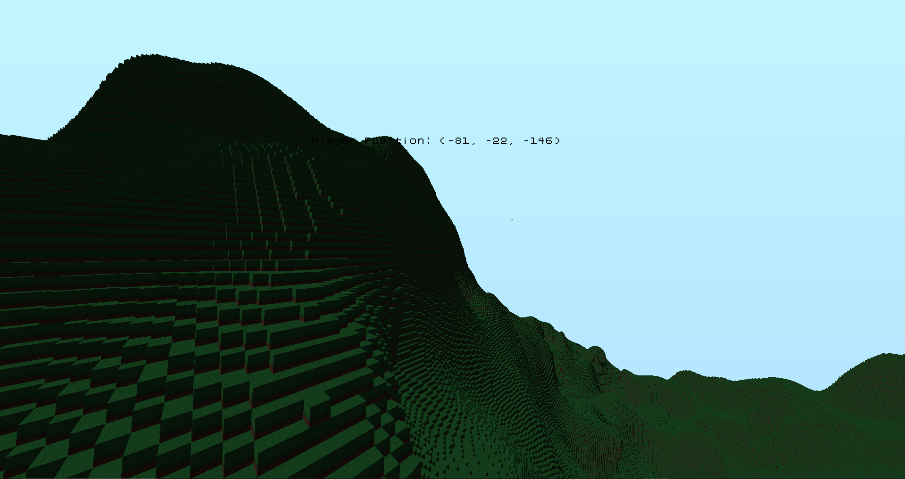

This is the most recent blog. To find other blogs, click the bloglist button at the top.
Journey through coding
Jul 23, 2024 at 2:28AM
Welcome. This is the first blog post that I will be making on this website, which will test out how poorly written my Python code is :)
I don't really remember when I started programming, but I recall it was probably around 2019 or so. During that time, I played on a Minecraft server that ran an older version of mc, and I was overall interested in the aspects of old Minecraft. I think I was so fascinated about it that I started to learn how to make simple plugins and try to run it on older version of mc, and I had successes.
That was when I was introduced to Java and coding in general. I think beforehand I messed a little with Unity but it shortly fell out as I was too inexperienced at the time to know what to do in it (Either that or I started messing with Unity after coding plugins). I guess I was so fascinated with Minecraft that I'm working on a game that resembles the visual aspect of mc. After Unity and mc plugins, I messed a little with Python and tried using pygame, but I didn't really appreciate pygame's rotation system. You had to deal with specifics when dealing with rotations that was confusing to me at the time and probably still is now. I don't use Python regularly, but it is easy to create simple scripts, such as generating everything for this website.
When I first started wanting to make actual games, I used Unity. I don't know what happened, but I stopped using Unity and decided to go on a "from scratch" path. I first messed with LWJGL, and tried messing with a little C/C++, but I just disliked using it. At first I even didn't want to use Visual Studio just because I wasn't used to the UI. After LWJGL, I guess I did some researching on engines written in C# or something cause now I am using OpenTK. It's been a long time since I first started programming, but using OpenTK has brought me this far, and I don't think I'll stop just yet. This is the furthest I've gone working on my engine, which was rewritten twice in Java (with LWJGL), and switched to C# and OpenTK.
I'll test out the link generation with this, here's a screenshot of the current model of my game:
